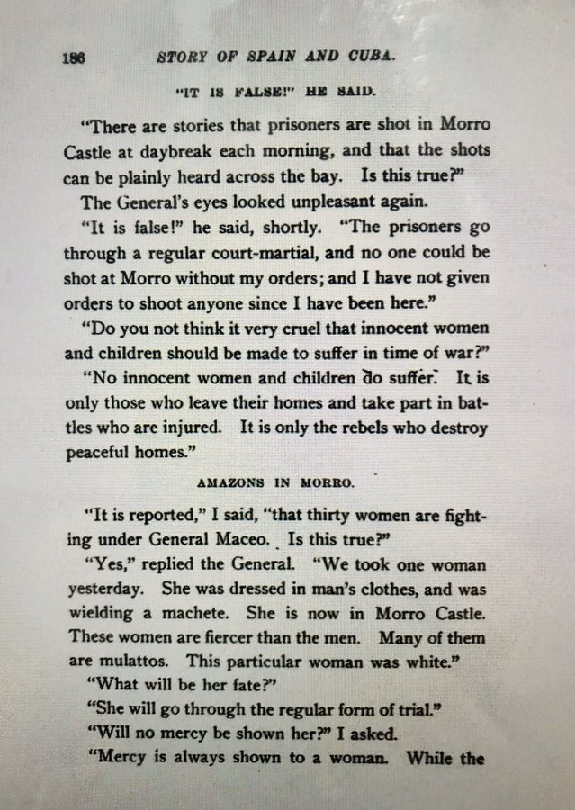

Los Hilos de Monik
¿Amazonas en Cuba?
Publicado el 26 de junio de 2020 - 4 tweets - Hilo original en Twitter
1
¿Son las fake news un fenómeno moderno? Pffff, para nada.
Frederick Lawrence, corresponsal del Journal durante la Guerra del 95, reportó sobre ... amazonas en las tropas de Antonio Maceo.
¿Fue mentira? No exactamente. La historia de Lawrence tenía un sustento en la realidad.
2
El periódico de Lawrence pertenecía al magnate estadounidense Hearts, famoso por promover titulares que vendieran. Y el propio Lawrence era conocido por "exagerar".
Llegó a decir que una de ellas, Adele Alotro, era lugarteniente de Máximo Gomez y esposa de un coronel español.
3
La confusión de Lawrence vino de que, en español, amazona es una mujer que monta a caballo. En inglés, la palabra tiene una connotación más "épica".
No hubo en Cuba amazonas mitológicas. Pero sí mujeres que combatían o ayudaban a los mambises. Y las llamaban ... jineteras.
4
De hecho, la también corresponsal del Journal, Kate Masterson durante una entrevista a Weyler, confirmó que en la prisión del Morro se encontraban encarceladas 30 mujeres que combatían bajo las órdenes de Maceo.
Weyler reconoció: "son más feroces que los hombres"
